Godot 2D Platformer - level 2, TileMapLayers
I level 1 fik vi oprettet et nyt projekt og fik rettet diverse settings så de passer til vores 2D spil.
I denne level skal vi starte på at lave vores levels og til det formål skal vi bruge et TileMapLayer som giver os mulighed for at bygge vores level af "tiles", altså små kvadratiske pixel blokke med forskellige tegninger som vi kan bruge til at tegne vores level med.
Vi kan lægge flere lag af TileMapLayers ovenpå hinanden
sådan at vi kan have en baggrund i et lag, de platforme vi vil bevæge os
på i et andet lag, og endda have et lag der ligger foran vores
platformslag så vores spiller kan bevæge sig bag ting.
Lidt mere om
TileMapLayers
Et TileMapLayer gemmer sine tiles i et TileSet
så det vil sige:
TileMapLayer= Det vi bruger til at tege med, sætte collisioner på og så videreTileSet= Hvad er det vi vil tegne
Opret vores første
TileMapLayer
I vores projekt vil vi gerne lave en Level scene som vi kan bruge til alle de ting der har med vores level at gøre, dvs.
- Selve "mappet"
- Fjender
- Elevatorer
- Health
- Exit points
- Og hvad vi ellers kan finde på
Så vi skal nu:
Lad os tage det et skridt af gangen.
Ny mappe
Lad os være super organiserede og starte med at lave en mappe der
hedder scenes og inden i den mappe laver vi mappe der
hedder levels.
Du kan godt huske hvordan man gør ikke? Højreklik på
res:// mappen, vælg "Create New" og "Folder".
Kald mappen scenes
Inden i den mappe laver du nu en mappe der hedder levels så det ser sådan her ud:
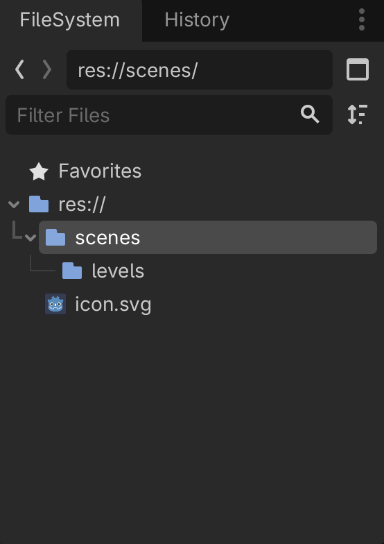
Sådan, nu har vi sat os selv op for succes og kan strege første item på vores liste
Level scene
Så skal vi have lavet en scene til vores level. Den skal som sagt indeholde mange forskellige ting så vi laver lige lidt struktur i den også.
- Opret en ny 2D Scene af typen
Node2D. Vores "ydre" scene skal bare være sådan en slags container for alle de ting vi skal bruge, lidt ligesom en<div>i HTML. - Omdøb
Node2DtilLevel01. Det skulle nu gerne se sådan her ud:
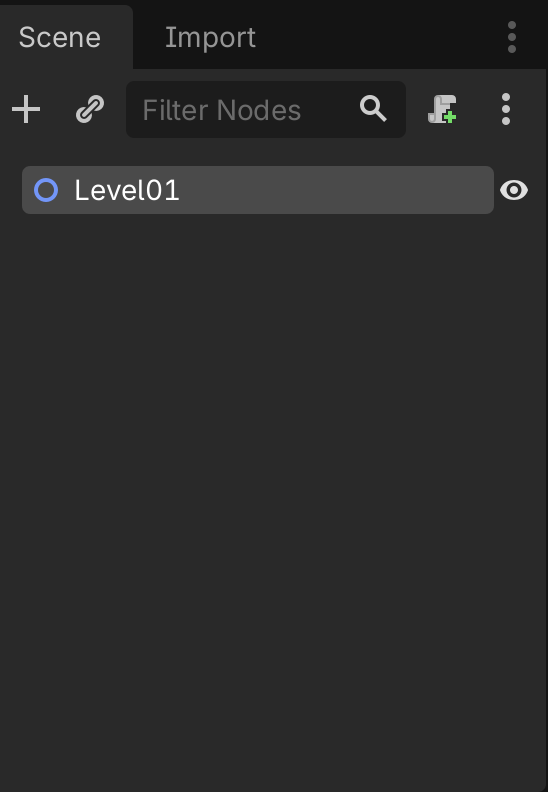
- Gem din nyoprettede
Level01i scenes/levels mappen
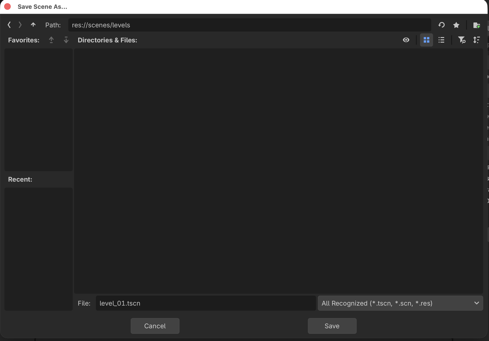
- Lad os tilføje nogle flere "container noder" som vi kan smide ting
i. Inde under din Level01
Node2Dskal du tilføje nogle flereNode2Dscener. Kald dem:- TileMaps
- Platforms
- Items
- Enemies
Det skal nu gerne se sådan her ud
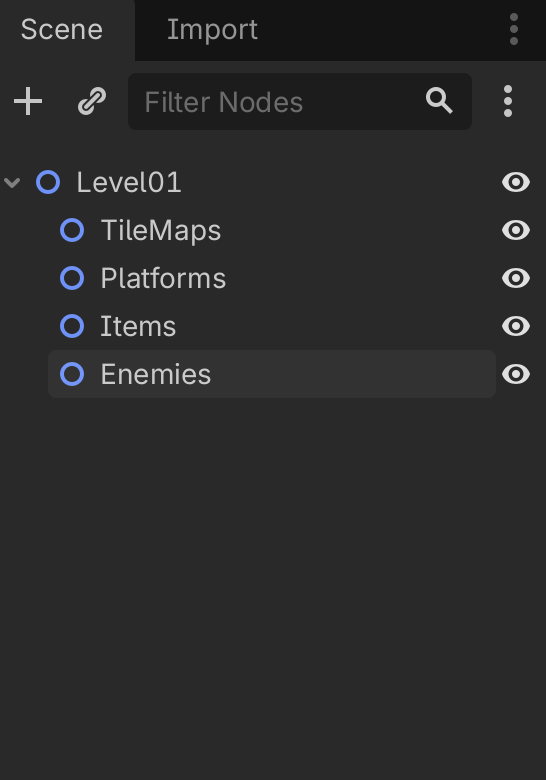
Hallo mand! Sikke en orden, fremtids os bliver så glade for nutids os fordi vi sådan har gjort det dejligt overskueligt.
Vi hakker af på listen:
Glæder os over hvor gode vi er og så skynder vi os videre.
Tilføj TileMapLayer
Endelig! Tid til at lave noget som vi kan se på skærmen! Sådan næsten da.
- Højreklik på TileMaps container noden
- Vælg "+ Add Child Node"
- Søg på
TileMap - Vælg
TileMapLayer
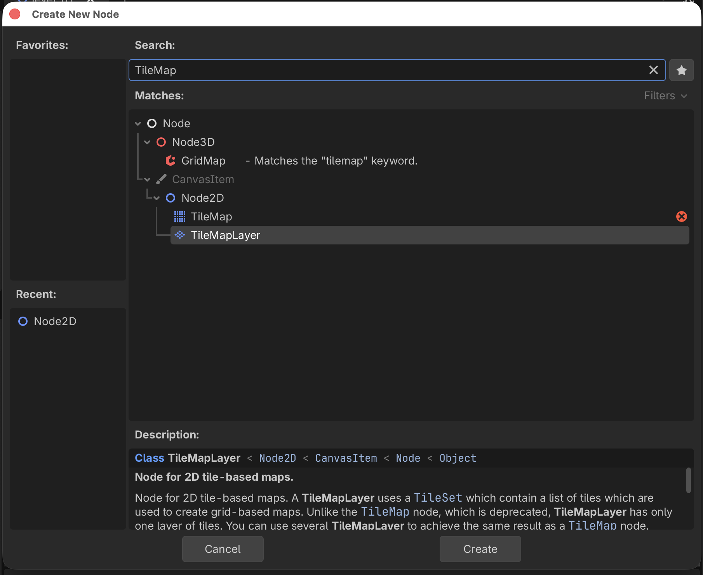
- Tryk på "Create"
- Omdøb
TileMapLayertil "CollisionLayer", det er her vi laver den del af banen man kan stå på, senere laver vi også for- og baggrund
Så langt så godt. Nu har vi en TileMapLayer node som vi
ikke kan bruge til noget som helst for vi skal også have tilføjet et
TileSet, men vi kan da strege på vores liste:
Og glæde os igen.
Så har vi glædet os nok...Videre!
TileSet
Nu har vi et TileMapLayer som er det vi bruger til at
designe vores levels med, men det kræver som sagt et
TileSet som er de "fliser" vi kan tegne med.
Så nu skal vi:
Lav mappe til assets
I "FileSystem" i nederste venstre hjørne skal vi have lavet en ny mappe på samme niveau som vores scenes mappe. Så vi:
- Højreklikker på "res://"
- Vælger "Create New..." -> "Folder"
- Kalder vores folder for "assets"
Lad os være ordentlige og lave en mappe til tilesets under vores assets. Du har sikkert regnet det ud men altså:
- Højreklik på den nye assets mappe
- Vælge "Create New..." -> "Folder"
- Kald vores nye folder for "tilesets"
Det skulle nu gerne se sådan her ud
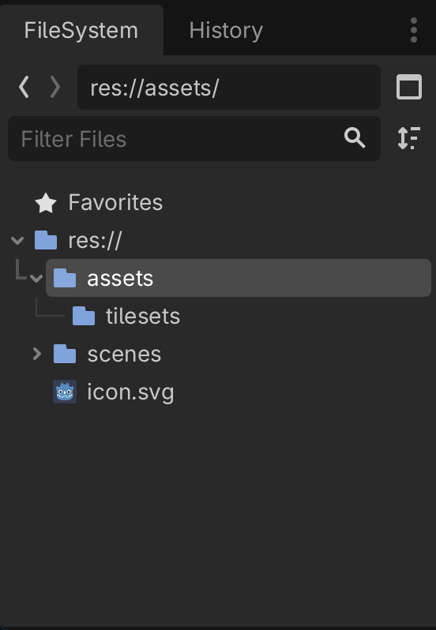
Vi streger af og går videre
Tilføj tile assets
Assets kan du som sagt finde her.
I den mappe kan du nu finde mappen med tilesets og derfra trække de her tilesets over i den "tileset" mappe du lige har lavet:
- 1_Industrial_Tileset_1.png
- 1_Industrial_Tileset_1B.png
- 1_Industrial_Tileset_1C.png
- 2_Industrial_Tileset_1_Background.png
- 2_Industrial_Tileset_1B_Background.png
- 2_Industrial_Tileset_1C_Background_Violet.png
Så har vi lidt at tegne med.
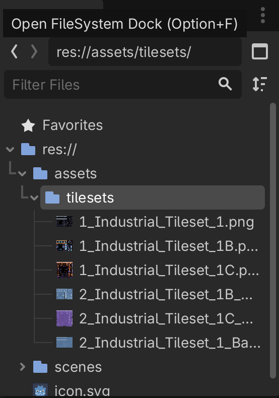
Sådan, det var step to
Vi streger af og går videre
Lav et nyt TileSet
Nu er vi endelig klar til at binde et TileSet på vores
TileMapLayer. Det gør vi sådan her:
- Vælg vores "CollisionLayer" i strukturen i venstre side
- I "inspectoren" i højre side, under "TileMapLayer" kan du klikke på drop down pilen og vælge "TileSet"
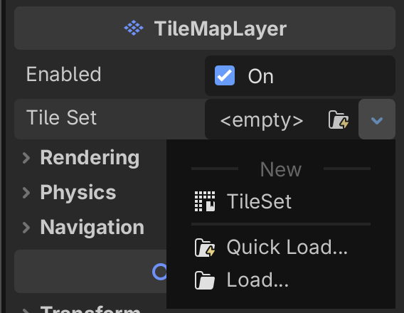
I bunden af skærmen er der nu dukket en ny "TileSet" fane op
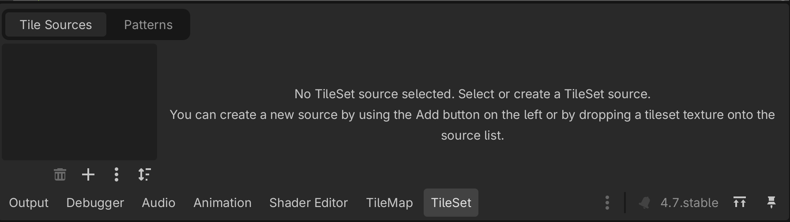
Her kan du nu vælge dine tilesets fra "assets" mappen og trække dem over på Tile Sources. Sigt efter det mørkere område i venstre side af fanen.
Vi vil gerne bruge:
- 1_Industrial_Tileset_1.png
- 1_Industrial_Tileset_1B.png
- 1_Industrial_Tileset_1C.png
Så træk dem over (hint...hvis du er skrap med tastaturet kan du markere flere på en gang (brug shift) og så trække dem over på en gang istedet for en af gangen som en anden hulemand)
Du får nu den her besked som du bare siger "Yes" til
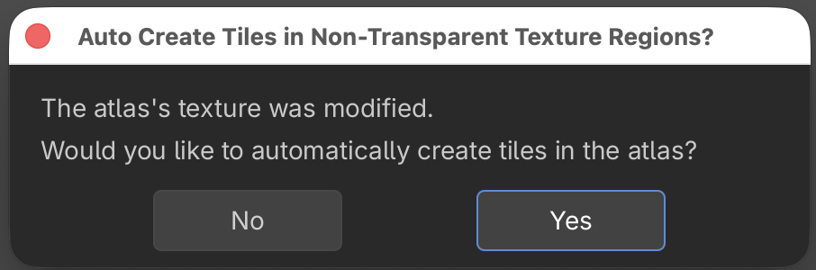
Nu skulle det gerne se sådan her ud ved dig
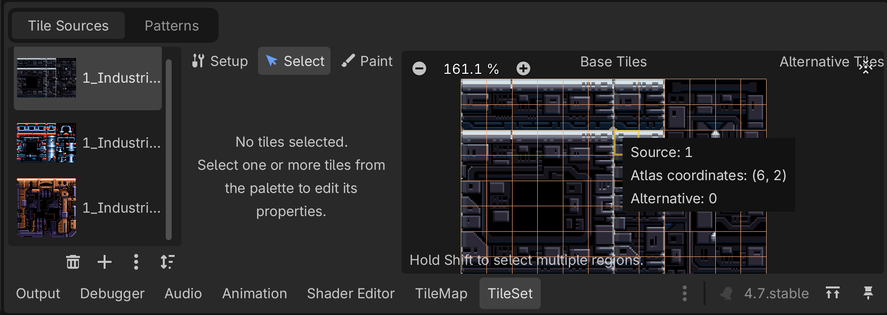
Det var det, nu har vi et TileMapLayer med tre
tilhørende TileSets som vi kan bruge til at tegne med.
Næste skridt
Nu er vi næsten klar til at tegne. Først skal vi dog lige have tilføjet et lag af "fysisk dimension", sådan at vores player, fjender og så videre kan stå på nogle af fliserne uden at falde af. Det kigger vi på i level 3 hvor vi også kommer i gang med at tegne...jeg lover!